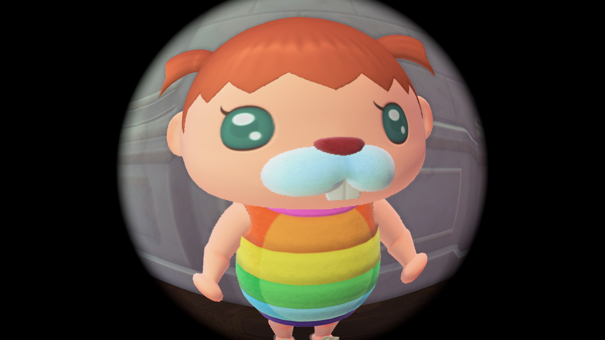

AI·DATA PLANNER
ART × ENGINEERING
AI/AX 엔지니어 양성과정 수강 중 · 2026.07—12
예술·콘텐츠 기획 경험과 산업경영공학의 분석 역량을 바탕으로, 사용자와 업무의 맥락을 구조화하고 데이터와 AI를 활용해 개선안을 설계하는 주니어 기획자를 목표로 합니다.

01 · Direction
가장 즉시 활용하기 좋은 강점은 콘텐츠를 이해하기 쉽게 구조화하는 능력입니다. 여기에 데이터 분석과 AI/AX 기술을 더해 서비스 기획과 운영 개선 영역으로 확장하고 있습니다.
ART × ENGINEERING
전시·교육·영상 콘텐츠를 기획하며 정보를 전달하는 흐름을 설계했습니다. 산업경영공학을 복수전공하며 통계, 데이터마이닝, 데이터베이스, 경제성 분석을 공부했고, 현재는 생성형 AI·웹·클라우드·AI 에이전트로 학습 범위를 넓히고 있습니다.
사용자 요구 정리, 서비스 흐름 설계, 데이터 기반 개선, 생성형 AI 활용 업무를 함께 다루는 주니어 직무와 가장 잘 맞습니다.
교육 영상 총괄 PD와 전시·SNS 콘텐츠 제작 경험을 바로 활용하면서, AI를 접목한 에듀테크·교육 운영으로 확장하기 좋습니다.
02 · Core Competencies
성격을 추상적으로 설명하기보다 실제 프로젝트에서 반복적으로 수행한 행동을 네 가지 역량으로 정리했습니다.
자료에서 핵심 메시지를 선별하고, 스토리보드·발표자료·교육 콘텐츠처럼 이해하기 쉬운 흐름으로 구조화합니다.
PLAN카드뉴스, 온라인 전시, 영상, 포스터 등 목적과 채널에 맞는 콘텐츠를 기획하고 제작합니다.
MAKE통계·데이터마이닝·SQL 학습을 바탕으로 데이터를 정리하고, 변수 간 관계와 문제의 원인을 분석합니다.
DATAGitHub, 터미널, 프롬프트 엔지니어링부터 웹·Python·AI 에이전트까지 새로운 도구를 과제와 프로젝트에 연결해 학습합니다.
BUILD03 · Selected Projects
데이터 분석, 서비스 흐름 설계, 교육 콘텐츠 총괄, 전시 기획까지 예술과 공학의 두 축이 모두 드러나는 경험을 선별했습니다.
주조 공정 데이터를 정리·비교해 정상과 불량의 차이와 주요 불량 요인을 탐색한 팀 프로젝트입니다.
공정 데이터에서 불량과 관련된 주요 변수를 파악했습니다.
데이터를 전처리하고 변수별 분포와 관계를 비교·분석했습니다.
분석 과정과 시사점을 보고서와 발표자료로 정리했습니다.
비대면 중고거래 과정을 단계별로 정의하고, Python과 Figma로 기능과 화면 흐름을 설계한 팀 프로젝트입니다.
대면 거래의 시간·장소 제약과 이용 과정의 불편을 정의했습니다.
사용자 흐름과 핵심 기능을 정리하고 Figma로 화면을 설계했습니다.
기획서, 사용자 흐름, 프로토타입과 Python 결과물을 제작했습니다.
역사·문화 정보를 중학생 눈높이에 맞는 교육 영상으로 재구성하고, 자료 조사부터 스토리보드, 촬영, 편집, 활동 자료 제작까지 수행했습니다.
전문적인 역사·문화 정보를 학생 눈높이로 전달해야 했습니다.
자료 조사, 대본·스토리보드, 촬영과 편집 과정을 총괄했습니다.
교육 영상과 활동지, 프로젝트 포트폴리오를 제작했습니다.
역사문화 공간의 정보와 현장 이미지를 온라인 전시로 구성하고, 영상·포스터·SNS 콘텐츠를 제작한 프로젝트입니다.
공간의 역사성과 시각적 특징을 온라인에서 전달해야 했습니다.
콘셉트 기획부터 촬영, 영상 편집, 포스터와 SNS 홍보를 연결했습니다.
두 차례의 온라인 전시가 모두 우수 전시로 선정되었습니다.
04 · AI/AX Engineering
공개 페이지에는 교육기관명과 세부 일정을 표시하지 않고, 제공한 교육 일정표에 적힌 학습 내용만 단계별로 정리했습니다. 아직 배우지 않은 기술은 보유 역량으로 표현하지 않았습니다.
PHASE 01
협업 도구, GitHub·터미널·개발 환경, 생성형 AI 메커니즘, 프롬프트 엔지니어링과 AI 업무 자동화를 학습합니다.
PHASE 02
HTML·CSS·JavaScript·React, Python 기초와 데이터 처리, 관계형 DB·NoSQL·벡터 DB, Django·FastAPI를 학습합니다.
PHASE 03
Docker·AWS, 분류·회귀·텍스트 분석과 신경망 모델, LLM API·RAG·LangChain 기반 애플리케이션을 학습합니다.
PHASE 04
프로젝트 기획과 설계, 서비스 개발, 발표와 문서화 과정을 수행합니다.
05 · Experience
지원 방향과 연결되는 기획·콘텐츠·전시·교육 경험을 중심으로 구성했으며, 공개 페이지에서는 기관과 프로그램의 고유명칭을 줄였습니다.
2023—2024
역사문화 공간을 주제로 온라인 전시를 기획·제작해 2년 연속 우수 전시로 선정되었습니다.
2022
전시 개최 과정을 현장에서 학습하고, 내용을 온라인 홍보 콘텐츠로 재구성했습니다.
2021—2022
역사·문화·예술 교육 영상의 자료 조사, 대본, 촬영, 편집과 활동 자료 제작을 수행했습니다.
2021
주 1회 인스타그램 카드뉴스를 기획·제작하고 전시와 행사 모니터링 내용을 콘텐츠에 반영했습니다.
2020—2022
박물관 SNS 운영, 전시 굿즈 시안 제작, 문화행사와 교육 프로그램 지원 등 전시 운영 전반을 경험했습니다.
06 · Credentials
자격증은 역량의 전부가 아니라 기본기를 확인하는 근거로, 도구는 실제 프로젝트를 만드는 수단으로 활용합니다.
Portfolio Note
예술·콘텐츠 기획 경험과 데이터 분석 역량을 바탕으로, 복잡한 정보를 사용자가 이해하기 쉬운 서비스 흐름으로 바꾸겠습니다.
문제를 정확히 정의하고 AI와 데이터를 적절히 연결해, 실행 가능한 결과를 만드는 기획자로 성장하겠습니다.